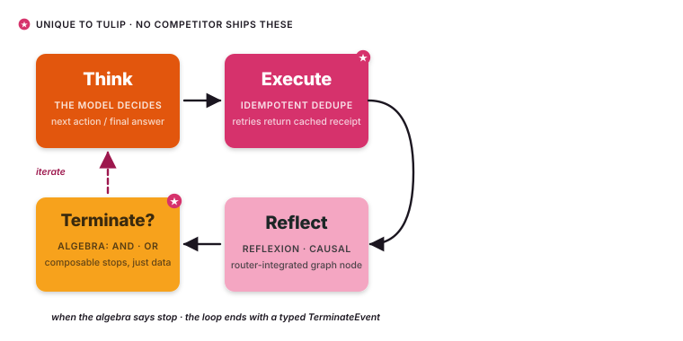

The agent loop¶
Every Tulip agent runs the same
loop. Four named nodes (Think → Execute → Reflect → Terminate), one
router that decides what runs next, one typed event stream, one piece of
immutable state that flows through. This page is the architectural
reference — what each node does, why it exists, what it emits, and how
to extend it.

The loop is implemented in
src/tulip/loop/
and is composed of four files:
react.py (the runner),
nodes.py (Think / Execute / Reflect / Terminate),
router.py (transitions),
and runner.py
(the loop driver that wires the nodes together).
Origin: ReAct, then refinement¶
The base pattern is ReAct (Yao et al., 2022) — Thought → Action → Observation, repeated until the model decides to stop. ReAct is now the default loop in most agentic SDKs.
The SDK keeps the spirit and adds three things:
- Action becomes Execute — a real node in the graph that owns tool dispatch and idempotency dedup, not a callback.
- Reflect becomes its own node — a structured self-evaluation step that runs between Execute and the next Think. The router can route to Reflect on a fixed cadence, on tool errors, or when loop-detection trips.
- Terminate becomes algebra — stopping is a tree of typed conditions
composed with
&and|, evaluated after every iteration.
┌──── another iteration ─────┐
│ ▼
┌────────┐ ┌────────┐ ┌─────────┐ ┌────────────┐
│ Think │───▶│ Execute│───▶│ Reflect │───▶│ Terminate? │──── done
└────────┘ └────────┘ └─────────┘ └────────────┘
State¶
Every node receives an AgentState and returns a new AgentState.
State is immutable — updates produce a new instance via
state.with_message(...), state.with_tool_execution(...),
state.with_metadata(...). Hooks see frozen events; nodes see
frozen state.
The state value object carries:
messages— the conversation in chat format, including the system prompt, the user's prompt, every model message, and every tool result.tool_executions— a chronological list of every tool call, its arguments, its result, and a hash of(name, kwargs)used by Execute for idempotent dedup.iterations— the running iteration counter, consumed by termination conditions.metadata— a free-form dict for hooks and applications to thread their own data.
Think¶
The Think node calls the configured model with the current message
list and gets back either a final answer or a set of tool calls to
fire. It emits a ThinkEvent with the model's reasoning content (when
the provider exposes it — extended-thinking models do; older models
don't) and a ModelChunkEvent per streamed token.
If the model returned text and no tool calls, the router transitions straight to Terminate. If it returned tool calls, the router goes to Execute.
Execute¶
The Execute node fires the tool calls returned by Think. Two behaviours make it different from a "just run the function" callback:
-
Idempotent dedup. For tools tagged
@tool(idempotent=True), Execute walksstate.tool_executionsand looks for a previous call with the same(tool_name, arguments)tuple. If found, the cached result is returned; the body never runs. The model can retry, loop, or panic without firing the tool a second time. Implementation:_find_matching_execution()loop/nodes.py:114— called fromExecuteNode.executeatloop/nodes.py:195. -
Parallel dispatch. Tool calls returned in the same model response fire concurrently. Execute awaits them all before returning to the router. Errors in one tool don't cancel the others; each tool's error becomes a tool-error message in the state.
Execute emits ToolStartEvent and ToolCompleteEvent per call.
Cached short-circuits emit a ToolCacheHitEvent so the run-trace
shows them distinctly.
Reflect¶
The Reflect node runs a structured self-evaluation between Execute and the next Think. It's gated — the router decides when to Reflect rather than going straight back to Think:
- Fixed cadence.
reflexion_interval=Nreflects every N iterations (default disabled). - On tool error. Reflect always runs after a tool that raised.
- On loop detection. The Reflector tracks the recent tool-execution sequence and triggers Reflect when it spots a repeating pattern.
The Reflector itself
(Reflector class — reasoning/reflexion.py:70)
asks the model to evaluate its last step, adjusts a confidence
score, and emits a ReflectEvent carrying the judgment text and
new confidence. The next Think sees the reflection in its message
stream.
Two complementary reasoning add-ons share the Reflect node:
- Grounding — scores the agent's recent claims against tool results (rule-based by default; LLM-as-judge when configured).
- Causal — builds a graph of cause-effect relations from the tool-execution trace and surfaces cycles or contradictions.
Both are off by default and switch on via Agent(grounding=True) /
Agent(causal=True). Source:
GroundingEvaluator reasoning/grounding.py:106 ·
CausalChain reasoning/causal.py:160.
Terminate¶
After every iteration the router checks the agent's terminate
condition. The condition is a typed object — MaxIterations,
TokenLimit, TimeLimit, NoToolCalls, ToolCalled,
ConfidenceMet, TextMention, or CustomCondition — composable
with & (And) and | (Or):
from tulip.core.termination import (
MaxIterations, ToolCalled, ConfidenceMet, TokenLimit,
)
terminate = (
ToolCalled("isolate_host") & ConfidenceMet(0.9)
) | MaxIterations(10) | TokenLimit(15_000)
The composite itself is a TerminationCondition whose check()
walks the tree and short-circuits on the first satisfied branch. The
router emits a TerminateEvent carrying the satisfied condition's
name + reason, then exits the loop.
Source:
src/tulip/core/termination.py.
The router¶
Transitions between nodes are decided by
Router class — loop/router.py:36 (the route_from_reflect rule lives at line 126).
It is a pure function of (current_node, state) returning the next
node — no hidden state, no side effects, no surprises. Three rules:
| From | To | When |
|---|---|---|
| Think | Execute | the model returned tool calls |
| Think | Terminate | the model returned text only |
| Execute | Reflect | the cadence / error / loop-detection rule fires |
| Execute | Think | otherwise |
| Reflect | Think | always (Reflect feeds back into the next Think) |
| any | Terminate | terminate.check(state) returns true |
Termination is checked after every node, not just at the top of the loop, so an agent can stop mid-cycle if a condition fires.
Events¶
Each node emits typed, write-protected events that hooks can observe but never mutate:
| Event | Emitted by |
|---|---|
ThinkEvent |
Think, when the model returns reasoning |
ModelChunkEvent |
Think, per streamed chunk |
ToolStartEvent |
Execute, before each tool fires |
ToolCompleteEvent |
Execute, after each tool returns (sets error on failure) |
ReflectEvent |
Reflect, after each self-evaluation |
GroundingEvent |
Reflect, after each grounding pass |
InterruptEvent |
Execute, when a tool requests human input |
TerminateEvent |
Terminate, when the loop exits |
Events are Pydantic models with model_config = {"frozen": True}.
They serialise cleanly to JSON for SSE, telemetry, and structured
logging.
Hooks¶
Hooks are how you observe and steer the loop without forking it. Each hook receives every event and can return one of three control directives:
Continue()— default, do nothing (most hooks).Cancel(reason)— abort the run cleanly with aTerminateEventwhose reason is your string.Retry()— re-run the last node (useful inModelRetryHookfor transient model errors).
Built-in hooks:
LoggingHook, StructuredLoggingHook,
TelemetryHook (OpenTelemetry-compatible),
ModelRetryHook, GuardrailsHook (topic policy + PII redaction),
and SteeringHook (LLM-as-judge tool approval). Source:
hooks/builtin/__init__.py (re-exports the four most-used hooks) ·
hooks/builtin/steering.py ·
hooks/builtin/retry.py.
A concrete example¶
Consider this prompt against the agent on the homepage:
"Triage alert A-42: a beacon from host WIN-7731 to 198.51.100.23. Isolate the host if it's confirmed malicious."
Iteration by iteration:
| # | Node | What happens |
|---|---|---|
| 1 | Think | Model emits a tool call: enrich_indicator(indicator="198.51.100.23", kind="ipv4"). Streams ThinkEvent + ModelChunkEvents. |
| 1 | Execute | Runs enrich_indicator. Tool is not marked idempotent (read-only) so no dedup. Result added to state.tool_executions. Emits ToolStartEvent, ToolCompleteEvent. |
| 1 | Reflect | Skipped — first iteration, no error, no loop. Router goes back to Think. |
| 1 | Terminate? | MaxIterations(8) not yet hit. ToolCalled("isolate_host") not satisfied. Continue. |
| 2 | Think | The reputation result confirms a known C2 endpoint, so the model emits isolate_host(host_id="WIN-7731", alert_id="A-42"). |
| 2 | Execute | Tool is idempotent=True. Execute hashes ("isolate_host", {host_id: "WIN-7731", alert_id: "A-42"}) and walks state.tool_executions for matches. None — so the body fires. Containment ticket CN-58291 returned. |
| 2 | Reflect | Reflexion runs (the cadence trigger fires). Confidence assessed at 0.93. ReflectEvent emitted. |
| 2 | Terminate? | ToolCalled("isolate_host") ✓ AND ConfidenceMet(0.9) ✓. The AND branch fires; the OR short-circuits true. Loop exits with TerminateEvent(reason="ToolCalled AND ConfidenceMet"). |
Total: two iterations, two tool calls, one Reflect, one Terminate.
If the model had hallucinated and re-emitted isolate_host with the
same args on iteration 3 (it didn't, but it could), Execute would
have caught the duplicate (name, kwargs) hash, returned the cached
CN-58291, and emitted a ToolCacheHitEvent so the trace shows the
short-circuit clearly. Re-isolating an already-contained host is a
no-op — exactly what idempotency guarantees.
Stop reasons¶
Every run ends with a TerminateEvent whose reason field names the
satisfied condition. The named reasons you'll see:
| Reason | When |
|---|---|
MaxIterations |
the iteration counter hit the configured ceiling |
TokenLimit |
cumulative model tokens exceeded the budget |
TimeLimit |
wall-clock budget exceeded |
NoToolCalls |
the model emitted text and no tool calls (the natural "I'm done" signal) |
ToolCalled |
a specific tool fired (with optional args predicate) |
ConfidenceMet |
the Reflexion confidence score cleared the threshold |
TextMention |
the final message matched a regex |
CustomCondition |
a user-supplied (state) -> bool returned true |
Cancelled |
a hook returned Cancel(reason="…") or the caller called agent.cancel() |
ModelError |
the model raised after retries exhausted |
Composite conditions (OrCondition, AndCondition) report the
underlying satisfied leaf, so you always get a leaf-condition name in
the reason.
Cancellation¶
Three ways to stop a running agent without waiting for the natural terminate condition:
From a hook¶
Any hook can return Cancel(reason="…") from any event. The current
node finishes (so a tool call is not torn out mid-flight), then the
loop exits with TerminateEvent(reason="Cancelled: …"). Useful for
the SteeringHook, which votes on each tool call before it fires
and can cancel the whole run if the model proposes something out of
policy.
class CostGuardHook(Hook):
async def on_iteration(self, ev: IterationEvent) -> Directive:
if ev.token_total > 100_000:
return Cancel(reason=f"token budget exhausted at {ev.token_total}")
return Continue()
From the caller¶
import asyncio
run = asyncio.create_task(agent.run(prompt))
# … later, on a timeout, on a user click, on whatever:
run.cancel()
The runner observes the cancellation between nodes and exits cleanly.
In-flight tool calls running on asyncio see the standard
CancelledError propagate through their await points; cooperative
tools can catch it to release resources before re-raising.
Via agent.cancel()¶
agent.cancel() sets a flag the runner polls between nodes. The
loop exits at the next safe point with a
TerminateEvent(reason="Cancelled"). For thread-bound runs, the
state still flushes to the checkpointer before exit, so the
conversation can resume cleanly later.
Common problems¶
Context window exhaustion¶
Long-running agents accumulate every model message and every tool
result in state.messages. Eventually the next Think exceeds the
provider's context window and fails. Three remedies:
- Wire a conversation manager —
Agent(conversation_manager=LLMCompactor(...))protects the system prompt and the most recent turns, then summarises the middle on demand. Source:src/tulip/memory/compactor.py. - Tighten tool result size — return concise structured data, not blobs of HTML. The model rarely needs the full source.
- Decompose with multi-agent — let an orchestrator delegate long sub-tasks to specialists with their own short context.
Tool selection mistakes¶
If the model picks the wrong tool, it's almost always the tool's description that's the bug. Tool docstrings are part of the contract the model sees. Be explicit: when to use this tool, when not to, what the inputs mean.
Loops that never converge¶
Symptom: the agent calls the same tool with slightly-different args,
five times, then hits MaxIterations and gives up. Two fixes:
- Reflect on cadence —
reflexion=True(with the default cadence) catches loops via the Reflector's pattern detector. - Terminate on no-progress — compose a
CustomConditionthat fires when the latest tool result equals the previous one.
Idempotency key collisions¶
If two semantically-different calls happen to produce the same
(name, kwargs) hash, Execute will dedup the second one and the
agent will get a stale receipt. Fix by including a per-request
identifier in the args (e.g., request_id) so the hash discriminates
distinct calls.
Putting it together¶
from tulip.agent import Agent
from tulip.tools.decorator import tool
from tulip.memory.backends import S3Backend
from tulip.core.termination import (
MaxIterations, ToolCalled, ConfidenceMet,
)
from tulip.hooks.builtin import StructuredLoggingHook
@tool(idempotent=True)
def isolate_host(host_id: str, alert_id: str) -> dict:
return edr.isolate(host_id, alert_id)
agent = Agent(
model="anthropic:claude-sonnet-4-6",
tools=[enrich_indicator, isolate_host],
system_prompt="You are an incident responder.",
reflexion=True, # turn Reflect on
grounding=True, # claim verification
checkpointer=S3Backend(...),
hooks=[StructuredLoggingHook(level="INFO")],
termination=(
ToolCalled("isolate_host") & ConfidenceMet(0.9)
) | MaxIterations(10),
)
async for event in agent.run("Triage alert A-42 and contain the host if malicious.",
thread_id="th-q3-2026"):
match event:
case ThinkEvent(reasoning=r) if r: print(f"💭 {r}")
case ToolStartEvent(tool_name=n): print(f"🔧 {n}")
case ReflectEvent(judgment=j): print(f"🪞 {j}")
case TerminateEvent(reason=why): print(f"✅ {why}")
What you can configure¶
Agent(...) argument |
Loop effect |
|---|---|
model= |
which provider Think calls |
tools= |
what Execute can dispatch |
system_prompt= |
prepended to the message list before the first Think |
reflexion=True |
enables Reflect on the configured cadence / triggers |
grounding=True |
adds claim verification inside Reflect |
checkpointer= |
persists state at every node so the run can resume after restart |
conversation_manager= |
summarises / prunes long histories before they exceed the context window |
hooks= |
observe and steer every event |
termination= |
the algebra the router checks after each node |
max_iterations= |
shorthand cap; equivalent to termination=MaxIterations(N) |
tool_execution= |
"concurrent" (default) or "sequential" |
Where to next¶
- Tools — how to write the things Execute calls.
- Idempotency — why and when to mark a tool idempotent.
- Reasoning — Reflexion / Grounding / Causal in detail.
- Termination — every built-in condition + composition.
- Events & Streaming — the typed event taxonomy.
- Hooks — observe + steer.
- Multi-agent — the loop runs inside seven coordination patterns plus A2A.